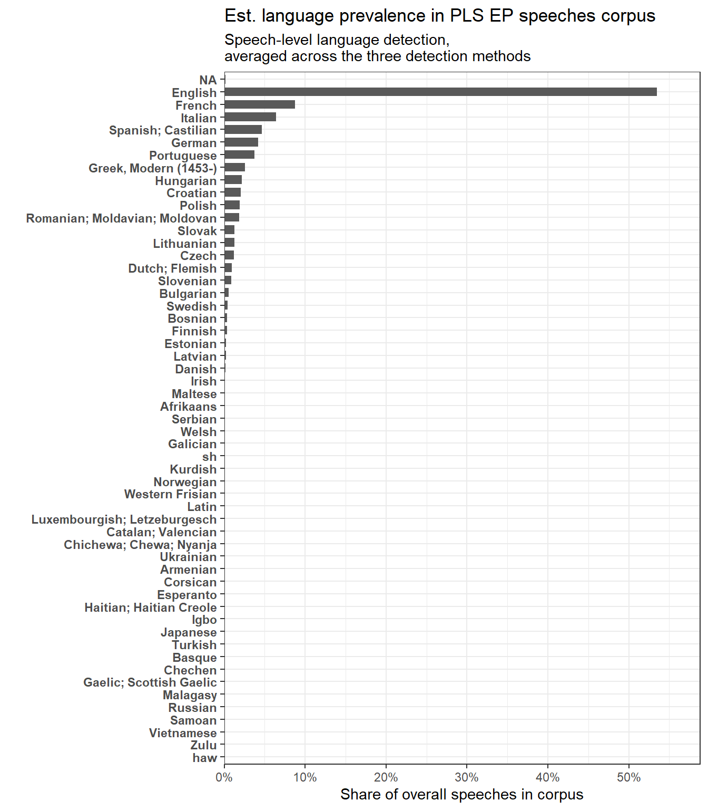
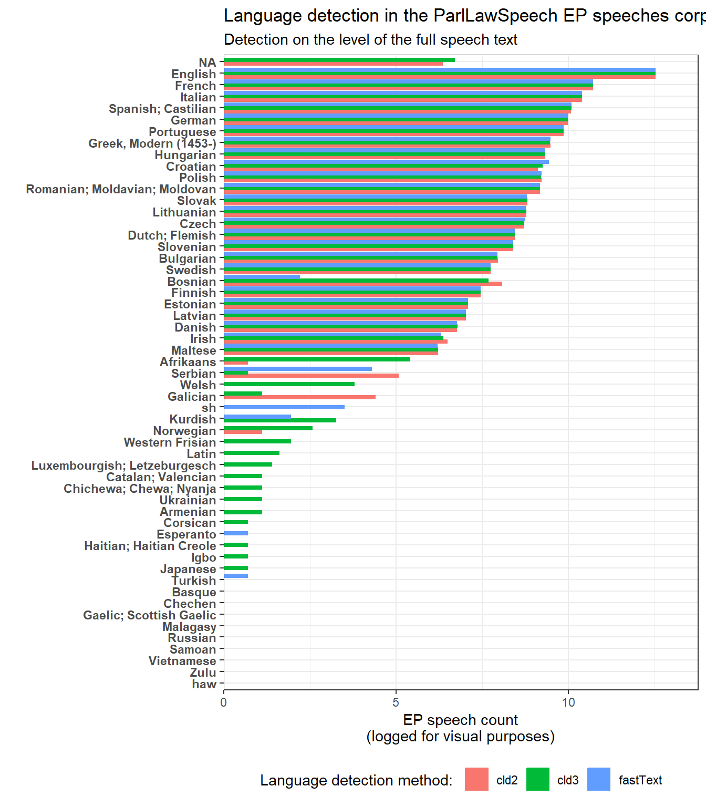
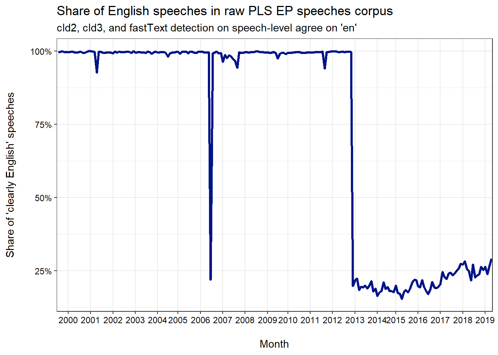
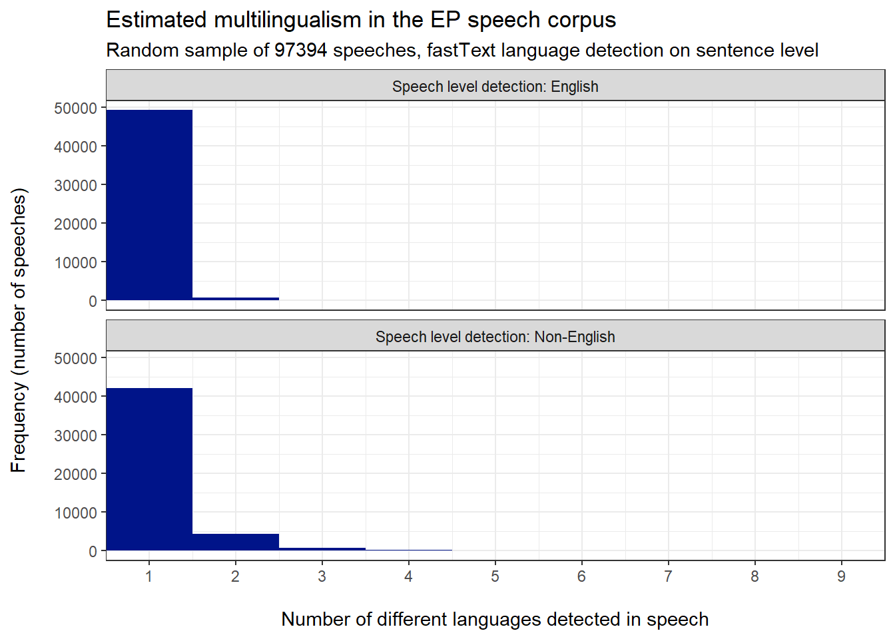

Code
# Packages #####
library(tidyverse)
library(tidytext)
# Language detection packages
library(fastText)
library(cld2)
library(cld3)
library(textcat)
library(franc)
# Rendering packages
library(kableExtra)We want to (also) provide an auto-translated, all-English version of the EP speech corpus (as the EP itself has stopped official translations at some point). To this end we have secured funding in the OPTED context and built a corresponding access pipeline to the Google Cloud Translation API. To save money, we do not want to translate speeches that are already in English.
But beyond variation of languages across speeches, multilingualism may also occur within EP speeches: speakers may switch languages within a given speech (and JS found examples even in speeches that were marked as officially translated). Such multilingualism could create problems in auto-translation (though we do not know for sure how the Google API deals with multilingual text)
One way to handle that would be tokenzing speeches into sentences and then auto-translate each sentence separately. However, this also comes with costs:
First neural network translation quality is know to decreases with less context.
Second, splitting the more than 500k is computationally quite expensive, and generates lots of API traffic.
Thirs, sentence tokenization is also not exact science and is much more error prone when it comes to data management and re-aggregation to the speech level.
To take an informed decision on speech- vs. sentence-level translation before we pay Google, this document thus generates some insights on multilingulaism in the present ParlLawSpeech corpus of the 509.649 EP speeches.
# Packages #####
library(tidyverse)
library(tidytext)
# Language detection packages
library(fastText)
library(cld2)
library(cld3)
library(textcat)
library(franc)
# Rendering packages
library(kableExtra)To learn about language detection off- and online and to see how the API deals with multilingual text, I set up a mock example featuring different European languages (including rare and notoriously tough ones for automated handling of language).
For offline language detection I consider Google’s compact language detectors versions 2 and 3 as well as Facebook’s fastText algorithm (using the smaller one of the two ready-made training data) here.
# # Language detection proof-of-concept exercise ####
#
# test <- data.frame(text = c("This is an English text. Not much else is to say about this.",
# "Das ist ein deutscher Text. Mehr gibt es dazu nicht zu sagen.",
# "Il s'agit d'un texte français. Il n'y a plus rien à dire à ce sujet.",
# "Ez magyar szöveg. Erről nincs több mondanivaló.",
# "Jedná se o český text. Víc k tomu není co říct.",
# "Este é un texto galego. Non hai máis que dicir sobre iso.",
# "Este es un texto en español. No hay nada más que decir al respecto.",
# "Testun Cymraeg yw hwn. Nid oes dim mwy i'w ddweud am hynny.",
# "Aquest és un text en català. No hi ha res més a dir sobre això.",
# "Ovo je bosanski tekst. Nema više šta da se kaže o tome.",
# "Ovo je hrvatski tekst. O tome se nema više što reći.",
# "This is a mixed text. Manches darin ist in deutscher Sprache. Otras frases están nuevamente escritas en español. Et le français est également utilisé.",
# "Dieser Text enthält unterschiedliche Sprachen, wie ihr seht. Például magyarul mond valamit a beszélő. És hirtelen németül angolul: Now you are surprised!"),
# ecpected = c("english",
# "german",
# "french",
# "hungarian",
# "czech",
# "galician",
# "spanish",
# "welsh",
# "catalan",
# "bosnian",
# "croatian",
# "mixed",
# "mixed"))
#
# # Textcat (n-gram based)
# test$lang_textcat <- textcat(test$text)
#
# # Google compact language detection
# # In prior projects cld2 proofed more accurate for short texts ...
# test$lang_cld2 <- cld2::detect_language(test$text)
# test$lang_cld3 <- cld3::detect_language(test$text)
#
#
# # Franc (not vectorised)
# test$lang_franc <- NA
# # test$prob_franc <- NA
# for (i in 1:nrow(test)){
# test$lang_franc[i] <- franc(test$text[i])
# # test$prob_franc[i] <- franc_all(test$text[i])[1,2]
# }
# test$lang_franc[test$lang_franc == "sco"] <- NA # undefined language code
#
#
# # fastText
# # Using the smaller pre-trained data set: https://fasttext.cc/docs/en/language-identification.html
# file_ftz = system.file("language_identification/lid.176.ftz", package = "fastText")
#
# # Extract most likely language
# # Firts element returns iso-codes, second elemnt would return probabilities
# test$lang_fastText <- fastText::language_identification(input_obj = test$text,
# pre_trained_language_model_path = file_ftz,
# k = 1,
# th = 0.0,
# threads = 1,
# verbose = TRUE)[[1]]
#
# test$prob_fastText <- fastText::language_identification(input_obj = test$text,
# pre_trained_language_model_path = file_ftz,
# k = 1,
# th = 0.0,
# threads = 1,
# verbose = TRUE)[[2]]
#
#
# # Key insights
# # Textcat is too limited with regard to languages
# # cld is too bold for mixed languages (also if one looks into proportions)
# # franc is annjoying because not vectorized and different isocodes ...
# # fastText has good benchmarks
#
# # Run test translation and language detection with google api here!
#
#
# # Auto-translation with google
# library(googleLanguageR)
# gl_auth("./private/opted-wp5-translation-4abef9cc0428.json") # Key for OPTED money ...
#
# nchar(paste(test$text, collapse = " ")) # 951
#
# # test_translation <-
# # gl_translate(
# # test$text,
# # target = "en",
# # format = "text",
# # source = "", # automatic language detection
# # model = "nmt")
#
#
# translation <- test_translation %>%
# rename(lang_GoogleAPI = detectedSourceLanguage) %>%
# select(lang_GoogleAPI, translatedText)
#
#
# test <- cbind(test, translation)
#
# write_rds(test,"./testdata/ProofOfConcept.rds")
test <- read_rds("./testdata/ProofOfConcept.rds")Let’s have a look at the results:
test %>% select(text, translatedText, lang_GoogleAPI, lang_cld2, lang_cld3, lang_fastText, prob_fastText) %>%
kbl(align=c('l', 'l', 'c','c','c','c','c')) %>%
kable_paper("hover", full_width = T)| text | translatedText | lang_GoogleAPI | lang_cld2 | lang_cld3 | lang_fastText | prob_fastText |
|---|---|---|---|---|---|---|
| This is an English text. Not much else is to say about this. | This is an English text. Not much else is to say about this. | en | en | en | en | 0.978175 |
| Das ist ein deutscher Text. Mehr gibt es dazu nicht zu sagen. | This is a German text. There's nothing more to say about that. | de | de | de | de | 0.999854 |
| Il s'agit d'un texte français. Il n'y a plus rien à dire à ce sujet. | This is a French text. There is nothing more to say about this. | fr | fr | fr | fr | 0.989828 |
| Ez magyar szöveg. Erről nincs több mondanivaló. | This is a Hungarian text. There is nothing more to say about this. | hu | hu | hu | hu | 0.996823 |
| Jedná se o český text. Víc k tomu není co říct. | This is a Czech text. There is nothing more to say about it. | cs | cs | cs | cs | 0.970411 |
| Este é un texto galego. Non hai máis que dicir sobre iso. | This is a Galician text. Nothing more to say about it. | gl | gl | gl | gl | 0.963449 |
| Este es un texto en español. No hay nada más que decir al respecto. | This is a text in Spanish. There is nothing more to say about it. | es | es | es | es | 0.988291 |
| Testun Cymraeg yw hwn. Nid oes dim mwy i'w ddweud am hynny. | This is a Welsh text. There is nothing more to say about that. | cy | cy | cy | cy | 0.425104 |
| Aquest és un text en català. No hi ha res més a dir sobre això. | This is a text in Catalan. Nothing more to say about it. | ca | ca | ca | ca | 0.981534 |
| Ovo je bosanski tekst. Nema više šta da se kaže o tome. | This is a Bosnian text. Nothing more to say about it. | bs | bs | bs | sr | 0.697407 |
| Ovo je hrvatski tekst. O tome se nema više što reći. | This is the Croatian text. There is nothing more to say about that. | hr | hr | bs | sh | 0.431880 |
| This is a mixed text. Manches darin ist in deutscher Sprache. Otras frases están nuevamente escritas en español. Et le français est également utilisé. | This is a mixed text. Manches darin is in German language. Other phrases are rewritten in Spanish. And French is also used. | gn | fr | NA | fr | 0.573624 |
| Dieser Text enthält unterschiedliche Sprachen, wie ihr seht. Például magyarul mond valamit a beszélő. És hirtelen németül angolul: Now you are surprised! | This text contains different languages that you see. For example, the speaker says something in Hungarian. And suddenly in German in English: Now you are surprised! | hu | hu | NA | hu | 0.575922 |
The key insights here:
On- and offline language detection algorithms are pretty consistent in this example.
But this is not hard science, of course: The Bosnian, Croatian and Welsh examples warrant caution (note that fastText’s certainty is also notably lower in these cases)
Most of the algorithms return a single language for multilingual text when forced to, but also with low levels of certainty
Importantly, the Google API handles multilingual text at least partially
(n.b.: I have not specified a source language when calling the API above)
After receiving the green light from LH and JS I’m using the Dropbox Version of September 15 here, adding a unique speech id across the full corpus that I will rely on for the final translation as well.
I keep a copy of this corpus source and will only append translated data later on. This way we can distinguish originally scraped data from the translated versions at any point when finalizing the ParlLawSpeech data.
# EP speeches data ####
# # Version 15.09.2023 - ParlLawSpeech Dropbox
# # Lukas Hetzer and Jan Schwalbach have given green light to use this version
# speeches <- read_rds("C:/Users/rauh/Dropbox/OPTED datasets/EP/Corpus_speeches_EP.RDS")
#
# # Create unique row ID
# speeches$id <- 1:nrow(speeches)
#
# # Store the data locally to have one fixed version
# write_rds(speeches, "./data/EP_speeches_PLS-original.rds", compress = "gz")
# Reload original speeche collection with unique ids
speeches <- read_rds("./data/EP_speeches_PLS-original.rds")To get a sense of multilingualism across speeches, I then ran the three offline language detection algorithms from above for of each of the ~500k speeches in the corpus.
# # Language detection in the EP - speech level ####
#
# start <- Sys.time()
# speeches$lang_cld2 <- cld2::detect_language(speeches$text)
# speeches$lang_cld3 <- cld3::detect_language(speeches$text)
# speeches$lang_fastText <- fastText::language_identification(input_obj = speeches$text,
# pre_trained_language_model_path = file_ftz,
# k = 1,
# th = 0.0,
# threads = 1,
# verbose = TRUE)[[1]]
# speeches$prob_fastText <- fastText::language_identification(input_obj = speeches$text,
# pre_trained_language_model_path = file_ftz,
# k = 1,
# th = 0.0,
# threads = 1,
# verbose = TRUE)[[2]]
# end <- Sys.time()
# end-start # 5 mins on Dell only
#
#
# # Export lang detection results
# write_rds(speeches %>% select(c(id, lang_cld2, lang_cld3, lang_fastText, prob_fastText)),
# "./data/EP-LangDetection_SpeechLevel.rds")
# re-load
speeches <- read_rds("./data/EP-LangDetection_SpeechLevel.rds") # Note: no textLet us firstly check how much the three tools agree on the (major) language of the 500k+ EP speeches.
speeches$lang_agreement <- (speeches$lang_cld2 == speeches$lang_cld3 & speeches$lang_fastText == speeches$lang_cld2 & speeches$lang_fastText == speeches$lang_cld3)
speeches$lang_agreement[is.na(speeches$lang_agreement)] <- F
# sum(is.na(speeches$lang_agreement))
print(paste0("Share of speeches on which the three detection tools agree: ", round((sum(speeches$lang_agreement)/nrow(speeches))*100, 2), "%"))[1] "Share of speeches on which the three detection tools agree: 98.58%"print(paste0("Number of speeches on which they disagree: ", sum(!speeches$lang_agreement)))[1] "Number of speeches on which they disagree: 7232"The detectors largely agree, but there is also a notable number of speeches on which the three detectors disagree.
To understand that better, I look at the distribution of languages each tool has detected in the full EP corpus.
# what languages did they find?
# The clds are notably more diverse (encoding issues?)
# unique(speeches$lang_fastText)
# unique(speeches$lang_cld2)
# unique(speeches$lang_cld3)
# Counts of languages by detection method
languages <- speeches %>% select(starts_with("lang")) %>%
select(-lang_agreement) %>%
pivot_longer(cols = 1:3) %>%
rename(detector = name,
language = value) %>%
mutate(detector = str_remove(detector, "lang_")) %>%
mutate(language = str_remove(language, "-Latn")) %>%
group_by(detector, language) %>%
summarise(count = n())
# Get the names right (as far as it can get)
isocodes <- ISOcodes::ISO_639_2 %>%
select(Alpha_2, Name) %>%
rename(language = Alpha_2,
langname = Name) %>%
filter(!is.na(language))
languages <- languages %>%
left_join(isocodes, by = c("language"))
languages$langname[is.na(languages$langname)] <- languages$language[is.na(languages$langname)]
# Order by average prevalence
lang.order <- languages %>%
group_by(langname) %>%
summarise(mean = mean(count)) %>%
arrange(desc(mean))
languages$langname2 <- factor(languages$langname, levels = lang.order$langname)Let’s consider at the overall prevalence of langauges first (here ignoring potential disagreement of the three detectors for a minute).
# Overall prevalence
lang.order %>%
mutate(share = mean/sum(lang.order$mean)) %>%
ggplot(aes(x=share, y= fct_rev(factor(langname, levels = lang.order$langname))))+
geom_col(width = .7)+
scale_x_continuous(expand = expansion(mult = c(0, .1)), labels = scales::label_percent())+
labs(x = "Share of overall speeches in corpus",
y = "",
title = "Est. language prevalence in PLS EP speeches corpus",
subtitle = "Speech-level language detection,\naveraged across the three detection methods")+
theme_bw()+
theme(legend.position = "bottom",
axis.text.y = element_text(face = "bold"))
Key insights here:
English is unsurprisingly the dominant language in this corpus along that measure.
Quite a few of the smaller European languages are detected on the speech level as well. Welsh or Letzeburgesch are examples.
We also detect a few very unlikely languages such as Samoan, Igbo, or Vietnamese, for example, which might be detection errors, though …
Let us see on which languages the three algorithms disagree:
# Prevalence by detector type
ggplot(languages, aes(x=log(count), y = fct_rev(langname2), color = detector, fill = detector))+
geom_col(position = position_dodge2(preserve = "single", width = .7))+
scale_x_continuous(expand = expansion(mult = c(0, .1)))+
labs(fill = "Language detection method: ",
color ="Language detection method: ",
x = "EP speech count\n(logged for visual purposes)",
y= "",
title = "Language detection in the ParlLawSpeech EP speeches corpus",
subtitle = "Detection on the level of the full speech text")+
theme_bw()+
theme(legend.position = "bottom",
axis.text.y = element_text(face = "bold"))
Key points here:
The language detectors almost perfectly agree for the big European languages, in particular with regard to English.
For smaller languages and for rather similar ones (e.g. Bosnian and Serbian), the detection methods disagree much more.
On that basis, I then identify all speeches for which all three detection methods agree on English as the major language used and look at their prevalence over time.
# Clearly English speeches
# All three detection methods should agree
speeches$clearly_english <- (speeches$lang_cld2 == "en" & speeches$lang_cld3 == "en" & speeches$lang_fastText == "en")
speeches$clearly_english[is.na(speeches$clearly_english)] <- F # Happens when one of the detectors has returned an NA, must thus be FALSE
# sum(speeches$clearly_english)
# Add full speech intro again (dropped above)
df <- read_rds("./data/EP_speeches_PLS-original.rds") %>%
select(c(id, date ,text))
speeches <- speeches %>%
left_join(df, by = "id")
rm(df)
# gc()
# Share of clearly english speeches by month
en.share <- speeches %>%
mutate(month = as.character(date) %>% str_remove("-[0-9]{1,2}$")) %>%
group_by(month) %>%
summarise(en.count = sum(clearly_english),
count = n()) %>%
ungroup() %>%
mutate(en.share = en.count/count)
# Plotting parameters
breaks <- en.share %>%
select(month) %>%
filter(str_detect(month, "-01$")) %>%
pull(month)
labels <- str_remove_all(breaks, "-01")
# Plot
ggplot(en.share, aes(x = month, y = en.share, group = 1))+
geom_line(color = "#001489", size = 1.2)+
scale_y_continuous(labels = scales::label_percent())+
scale_x_discrete(breaks = breaks, labels = labels)+
labs(title = "Share of English speeches in raw PLS EP speeches corpus",
subtitle = "cld2, cld3, and fastText detection on speech-level agree on \'en\'",
y = "Share of \'clearly English\' speeches\n",
x = "\nMonth")+
theme_bw()+
theme(axis.text = element_text(color = "black"))
This clearly shows that the official translation ended in late 2012, but we also see that there are some non-English speeches in the corpus beforehand. JS has highlighted this before, noting that these are most likely archival errors on part of the EP itself.
The above gives a sense of language variation on the level of speeches, but the potentially thorny issue is language variation within speeches.
To see how prevalent this is, I drew random samples of around 50k speeches from (a) those speeches that are marked as uniquely English by the three algorithms used above and form (b) those for which at least one algorithm suggest a different language as most likely.
The I tokenized them into individual sentences and detected the language on that level, using the fastText algorithm here. The figure below shows how many different languages were detected within individual speeches along that line.
# round(sum(speeches$prob_fastText>=.9)/nrow(speeches), 2)*100
# # Language detection on the sentence level ####
# # Random samples of 50.000 speeches (~10%)
# # One for agreement on 'en' one without such agreement
#
# # Speech detection runs for ~ 1h
#
# file_ftz = system.file("language_identification/lid.176.ftz", package = "fastText")
#
# sample.en <- speeches %>%
# filter(clearly_english) %>%
# sample_n(50000, replace = F) %>%
# group_by(id) %>%
# unnest_tokens(output = sentence,
# input = text,
# token = "sentences",
# to_lower = F) %>%
# filter(str_detect(sentence, "[a-z]")) %>% # Only sentence with at least one lowercase letter
# mutate(lang = fastText::language_identification(input_obj = sentence,
# pre_trained_language_model_path = file_ftz,
# k = 1,
# th = 0.0,
# threads = 1,
# verbose = F)[[1]]) %>%
# group_by(id) %>% # speech level
# summarise(detected.languages = length(unique(lang))) %>%
# mutate(speech.en = "Speech level detection: English")
#
#
# sample.fo <- speeches %>%
# filter(!clearly_english) %>%
# sample_n(50000, replace = F) %>%
# group_by(id) %>%
# unnest_tokens(output = sentence,
# input = text,
# token = "sentences",
# to_lower = F) %>%
# filter(str_detect(sentence, "[a-z]")) %>% # Only sentence with at least one lowercase letter
# mutate(lang = fastText::language_identification(input_obj = sentence,
# pre_trained_language_model_path = file_ftz,
# k = 1,
# th = 0.0,
# threads = 1,
# verbose = F)[[1]]) %>%
# group_by(id) %>% # speech level
# summarise(detected.languages = length(unique(lang))) %>%
# mutate(speech.en = "Speech level detection: Non-English")
#
# sample <- rbind(sample.en, sample.fo)
#
# write_rds(sample, "./data/LanguageCountSample.rds")
sample <- read_rds("./data/LanguageCountSample.rds")
ggplot(sample, aes(x= detected.languages))+
geom_histogram(width = .7, bins = max(sample$detected.languages), color = NA, fill = "#001489")+
scale_x_continuous(expand = expansion(mult = c(0, 0)),
breaks = seq(1,max(sample$detected.languages), 1))+
facet_wrap(.~speech.en, nrow = 2)+
labs(y = "Frequency (number of speeches)\n",
x = "\nNumber of different languages detected in speech",
title = "Estimated multilingualism in the EP speech corpus",
subtitle = paste0("Random sample of ", nrow(sample), " speeches, fastText language detection on sentence level"))+
theme_bw()
Key insights here:
Multilingualism in EP speeches is hardly an ubiquitous phenomenon along this measure. This large sample (~20% of the full corpus) suggests that it occurs 6% of speeches only.
It is especially rare in speeches for which the three approaches to speech-level language detection agree on English. For those, the probability that more than one language is detected on the sentence levels is only 2% and fewer languages are detected at all (Maximum: 3).
We have seen that the Google API seems to be able to handle multilingualism at least partially in the mock examples above. To get a better sense on this issue, I construct a somewhat more real example by pasting paragraphs from Von der Leyen’s 2023 SOTEU speech together in which she has deliberately switched languages.
# SOTEU extracts
soteu <- "This was wrong, not just for the climate, but also for our public finances, and our independence. And we are still paying for this today.
Only a few visionaries understood that the real problem was fossil fuels themselves, not just their price. Among them were our Danish friends.
When the oil crisis hit, Denmark started to invest heavily into harnessing the power of the wind.
They laid the foundations for its global leadership in the sector and created tens of thousands of new jobs.
This is the way to go! Not just a quick fix, but a change of paradigm, a leap into the future.
STAYING THE COURSE AND PREPARING FOR THE FUTURE Mesdames et Messieurs les Députés, La bonne nouvelle est que cette transformation nécessaire a commencé.
Elle a lieu en mer du Nord et en mer Baltique, où nos États membres ont massivement investi dans l'éolien en mer.
Elle a lieu en Sicile, où la plus grande usine solaire d'Europe produira bientôt la toute dernière génération de panneaux solaires.
Et elle a lieu dans le nord de l'Allemagne, où les trains régionaux roulent désormais à l'hydrogène vert. L'hydrogène peut changer la donne pour l'Europe.
L'Union Européenne achètera dix avions amphibies légers et trois hélicoptères supplémentaires pour compléter notre flotte.
Voilà la solidarité européenne en action Honourable Members, The last years have shown how much Europe can achieve when it is united.
After an unprecedented pandemic, our economic output overtook pre-crisis levels in record time.
We went from having no vaccine to securing over 4 billion doses for Europeans and for the world.
And in record time, we came up with SURE – so that people could stay in their jobs even if their companies had run out of work.
We were in the deepest recession since World War 2. We achieved the fastest recovery since the post-war boom.
And we will revise the Late Payment Directive – because it is simply not fair that 1 in 4 bankruptcies are due to invoices not being paid on time.
For millions of family businesses, this will be a lifeline in troubled waters.
Der Mangel an Personal ist eine weitere Herausforderung für Europas Unternehmen. Die Zahl der Arbeitslosen ist so niedrig wie nie zuvor.
Das ist gut! Aber gleichzeitig liegt die Zahl der offenen Stellen auf Rekordniveau. Ob Lastwagenfahrer, Kellnern oder Flughafenpersonal.
Ob auch Krankenpfleger, Ingenieurinnen oder IT-Technikerinnen. Von Ungelernt bis Universitätsabschluß, Europa braucht sie alle!
Wir müssen daher viel stärker in die Aus- und Weiterbildung investieren.
Mit gleichgesinnten Partnern können wir auch außerhalb unserer Grenzen Arbeitsstandards und Umweltstandards sichern.
Wir müssen vor allem unsere Beziehungen zu diesen Partnern und zu wichtigen Wachstumsregionen erneuern.
Ich werde daher die Abkommen mit Chile, Mexiko und Neuseeland zur Ratifizierung vorlegen.
Und wir treiben die Verhandlungen mit bedeutenden Partnern wie Australien und Indien voran.
But securing supplies is only a first step. The processing of these metals is just as critical.
Today, China controls the global processing industry. Almost 90 % of rare earths and 60 % of lithium are processed in China.
We will identify strategic projects all along the supply chain, from extraction to refining, from processing to recycling.
And we will build up strategic reserves where supply is at risk."
# # Auto-translation with google
# library(googleLanguageR)
# gl_auth("./private/opted-wp5-translation-4abef9cc0428.json") # Key for OPTED money ...
#
# nchar(soteu) # 3356
# soteu_translation <-
# gl_translate(
# soteu,
# target = "en",
# format = "text",
# model = "nmt")
# write_rds(soteu_translation, "./testdata/SOTEU_translation.rds")
soteu <- read_rds("./testdata/SOTEU_translation.rds")
soteu %>% select(text, translatedText) %>%
kbl(align=c('l', 'l')) %>%
kable_paper("hover", full_width = T)| text | translatedText |
|---|---|
| This was wrong, not just for the climate, but also for our public finances, and our independence. And we are still paying for this today. Only a few visionaries understood that the real problem was fossil fuels themselves, not just their price. Among them were our Danish friends. When the oil crisis hit, Denmark started to invest heavily into harnessing the power of the wind. They laid the foundations for its global leadership in the sector and created tens of thousands of new jobs. This is the way to go! Not just a quick fix, but a change of paradigm, a leap into the future. STAYING THE COURSE AND PREPARING FOR THE FUTURE Mesdames et Messieurs les Députés, La bonne nouvelle est que cette transformation nécessaire a commencé. Elle a lieu en mer du Nord et en mer Baltique, où nos États membres ont massivement investi dans l'éolien en mer. Elle a lieu en Sicile, où la plus grande usine solaire d'Europe produira bientôt la toute dernière génération de panneaux solaires. Et elle a lieu dans le nord de l'Allemagne, où les trains régionaux roulent désormais à l'hydrogène vert. L'hydrogène peut changer la donne pour l'Europe. L'Union Européenne achètera dix avions amphibies légers et trois hélicoptères supplémentaires pour compléter notre flotte. Voilà la solidarité européenne en action Honourable Members, The last years have shown how much Europe can achieve when it is united. After an unprecedented pandemic, our economic output overtook pre-crisis levels in record time. We went from having no vaccine to securing over 4 billion doses for Europeans and for the world. And in record time, we came up with SURE – so that people could stay in their jobs even if their companies had run out of work. We were in the deepest recession since World War 2. We achieved the fastest recovery since the post-war boom. And we will revise the Late Payment Directive – because it is simply not fair that 1 in 4 bankruptcies are due to invoices not being paid on time. For millions of family businesses, this will be a lifeline in troubled waters. Der Mangel an Personal ist eine weitere Herausforderung für Europas Unternehmen. Die Zahl der Arbeitslosen ist so niedrig wie nie zuvor. Das ist gut! Aber gleichzeitig liegt die Zahl der offenen Stellen auf Rekordniveau. Ob Lastwagenfahrer, Kellnern oder Flughafenpersonal. Ob auch Krankenpfleger, Ingenieurinnen oder IT-Technikerinnen. Von Ungelernt bis Universitätsabschluß, Europa braucht sie alle! Wir müssen daher viel stärker in die Aus- und Weiterbildung investieren. Mit gleichgesinnten Partnern können wir auch außerhalb unserer Grenzen Arbeitsstandards und Umweltstandards sichern. Wir müssen vor allem unsere Beziehungen zu diesen Partnern und zu wichtigen Wachstumsregionen erneuern. Ich werde daher die Abkommen mit Chile, Mexiko und Neuseeland zur Ratifizierung vorlegen. Und wir treiben die Verhandlungen mit bedeutenden Partnern wie Australien und Indien voran. But securing supplies is only a first step. The processing of these metals is just as critical. Today, China controls the global processing industry. Almost 90 % of rare earths and 60 % of lithium are processed in China. We will identify strategic projects all along the supply chain, from extraction to refining, from processing to recycling. And we will build up strategic reserves where supply is at risk. | This was wrong, not just for the climate, but also for our public finances, and our independence. And we are still paying for this today. Only a few visionaries understood that the real problem was fossil fuels themselves, not just their price. Among them were our Danish friends. When the oil crisis hit, Denmark started to invest heavily in harnessing the power of the wind. They laid the foundations for its global leadership in the sector and created tens of thousands of new jobs. This is the way to go! Not just a quick fix, but a change of paradigm, a leap into the future. STAYING THE COURSE AND PREPARING FOR THE FUTURE Mesdames and Messieurs les Députés, La bonne new est que this transformation needs a commencé. Elle a lieu en mer du Nord et en mer Baltique, où nos États membres ont massivement investi dans l'éolien en mer. Elle a lieu en Sicile, où la plus grande solar factory d'Europe produira bientôt la toute dernière génération de panneaux solaires. Et elle a lieu dans le nord de l'Allemagne, où les trains régionaux roulent désormais à l'hydrogène vert. L'hydrogène peut changer la donne pour l'Europe. The Union Européenne achètera dix avions amphibies légers and three hélicoptères supplémentaires to complete our fleet. Voilà la solidarity européenne en action Honorable Members, The last years have shown how much Europe can achieve when it is united. After an unprecedented pandemic, our economic output exceeded pre-crisis levels in record time. We went from having no vaccine to securing over 4 billion doses for Europeans and for the world. And in record time, we came up with SURE – so that people could stay in their jobs even if their companies had run out of work. We were in the deepest recession since World War 2. We achieved the fastest recovery since the post-war boom. And we will revise the Late Payment Directive – because it is simply not fair that 1 in 4 bankruptcies are due to invoices not being paid on time. For millions of family businesses, this will be a lifeline in troubled waters. The lack of staff is another challenge for Europe's companies. The number of unemployed is lower than ever before. That's good! But at the same time the number of job vacancies is at record levels. Whether truck drivers, waiters or airport staff. Whether nurses, engineers or IT technicians. From unskilled to university degree, Europe needs them all! We therefore need to invest much more heavily in training and further education. With like-minded partners, we can also ensure labor standards and environmental standards outside our borders. Above all, we need to renew our relationships with these partners and with key growth regions. I will therefore submit the agreements with Chile, Mexico and New Zealand for ratification. And we are advancing negotiations with important partners such as Australia and India. But securing supplies is only a first step. The processing of these metals is just as critical. Today, China controls the global processing industry. Almost 90% of rare earths and 60% of lithium are processed in China. We will identify strategic projects all along the supply chain, from extraction to refining, from processing to recycling. And we will build up strategic reserves where supply is at risk. |
That is disappointing: We see that the German bits have been translated well while the French bits were ignored. The API has also returned “de” as the detected source language which together suggests that the API translates only one language when several are actually in the document.
Let’s see how it performs when tokenizing the same text into sentences (using tidytext here). Besides the raw and translated text, the table also indicates the source language detected by the API and the locally detected fastText variant.
# # SOTEU extracts - sentence level
#
#
# soteu <- "This was wrong, not just for the climate, but also for our public finances, and our independence. And we are still paying for this today.
# Only a few visionaries understood that the real problem was fossil fuels themselves, not just their price. Among them were our Danish friends.
# When the oil crisis hit, Denmark started to invest heavily into harnessing the power of the wind.
# They laid the foundations for its global leadership in the sector and created tens of thousands of new jobs.
# This is the way to go! Not just a quick fix, but a change of paradigm, a leap into the future.
# STAYING THE COURSE AND PREPARING FOR THE FUTURE Mesdames et Messieurs les Députés, La bonne nouvelle est que cette transformation nécessaire a commencé.
# Elle a lieu en mer du Nord et en mer Baltique, où nos États membres ont massivement investi dans l'éolien en mer.
# Elle a lieu en Sicile, où la plus grande usine solaire d'Europe produira bientôt la toute dernière génération de panneaux solaires.
# Et elle a lieu dans le nord de l'Allemagne, où les trains régionaux roulent désormais à l'hydrogène vert. L'hydrogène peut changer la donne pour l'Europe.
# L'Union Européenne achètera dix avions amphibies légers et trois hélicoptères supplémentaires pour compléter notre flotte.
# Voilà la solidarité européenne en action Honourable Members, The last years have shown how much Europe can achieve when it is united.
# After an unprecedented pandemic, our economic output overtook pre-crisis levels in record time.
# We went from having no vaccine to securing over 4 billion doses for Europeans and for the world.
# And in record time, we came up with SURE – so that people could stay in their jobs even if their companies had run out of work.
# We were in the deepest recession since World War 2. We achieved the fastest recovery since the post-war boom.
# And we will revise the Late Payment Directive – because it is simply not fair that 1 in 4 bankruptcies are due to invoices not being paid on time.
# For millions of family businesses, this will be a lifeline in troubled waters.
# Der Mangel an Personal ist eine weitere Herausforderung für Europas Unternehmen. Die Zahl der Arbeitslosen ist so niedrig wie nie zuvor.
# Das ist gut! Aber gleichzeitig liegt die Zahl der offenen Stellen auf Rekordniveau. Ob Lastwagenfahrer, Kellnern oder Flughafenpersonal.
# Ob auch Krankenpfleger, Ingenieurinnen oder IT-Technikerinnen. Von Ungelernt bis Universitätsabschluß, Europa braucht sie alle!
# Wir müssen daher viel stärker in die Aus- und Weiterbildung investieren.
# Mit gleichgesinnten Partnern können wir auch außerhalb unserer Grenzen Arbeitsstandards und Umweltstandards sichern.
# Wir müssen vor allem unsere Beziehungen zu diesen Partnern und zu wichtigen Wachstumsregionen erneuern.
# Ich werde daher die Abkommen mit Chile, Mexiko und Neuseeland zur Ratifizierung vorlegen.
# Und wir treiben die Verhandlungen mit bedeutenden Partnern wie Australien und Indien voran.
# But securing supplies is only a first step. The processing of these metals is just as critical.
# Today, China controls the global processing industry. Almost 90 % of rare earths and 60 % of lithium are processed in China.
# We will identify strategic projects all along the supply chain, from extraction to refining, from processing to recycling.
# And we will build up strategic reserves where supply is at risk."
#
#
# soteu_sentences <- soteu %>%
# as.data.frame() %>%
# rename(text = 1) %>%
# mutate(id = 1) %>%
# group_by(id) %>%
# unnest_tokens(output = sentence,
# input = text,
# token = "sentences",
# to_lower = F) %>%
# mutate(lang = fastText::language_identification(input_obj = sentence,
# pre_trained_language_model_path = file_ftz,
# k = 1,
# th = 0.0,
# threads = 1,
# verbose = F)[[1]])
#
# # Auto-translation with google
# library(googleLanguageR)
# gl_auth("./private/opted-wp5-translation-4abef9cc0428.json") # Key for OPTED money ...
#
# soteu_translation <-
# gl_translate(
# soteu_sentences$sentence,
# target = "en",
# format = "text",
# model = "nmt")
#
# soteu_translation$detectedLanguageFastText <- soteu_sentences$lang
#
# write_rds(soteu_translation, "./testdata/SOTEU_translation_sentenceLevel.rds")
soteu <- read_rds("./testdata/SOTEU_translation_sentenceLevel.rds")
soteu %>% select(text, translatedText, detectedSourceLanguage, detectedLanguageFastText) %>%
rename(API_lang = detectedSourceLanguage,
fastText_lang = detectedLanguageFastText) %>%
kbl(align=c('l', 'l', 'c', 'c')) %>%
kable_paper("hover", full_width = T)| text | translatedText | API_lang | fastText_lang |
|---|---|---|---|
| This was wrong, not just for the climate, but also for our public finances, and our independence. | This was wrong, not just for the climate, but also for our public finances, and our independence. | en | en |
| And we are still paying for this today. | And we are still paying for this today. | en | en |
| Only a few visionaries understood that the real problem was fossil fuels themselves, not just their price. | Only a few visionaries understood that the real problem was fossil fuels themselves, not just their price. | en | en |
| Among them were our Danish friends. | Among them were our Danish friends. | en | en |
| When the oil crisis hit, Denmark started to invest heavily into harnessing the power of the wind. | When the oil crisis hit, Denmark started to invest heavily into harnessing the power of the wind. | en | en |
| They laid the foundations for its global leadership in the sector and created tens of thousands of new jobs. | They laid the foundations for its global leadership in the sector and created tens of thousands of new jobs. | en | en |
| This is the way to go! | This is the way to go! | en | en |
| Not just a quick fix, but a change of paradigm, a leap into the future. | Not just a quick fix, but a change of paradigm, a leap into the future. | en | en |
| STAYING THE COURSE AND PREPARING FOR THE FUTURE Mesdames et Messieurs les Députés, La bonne nouvelle est que cette transformation nécessaire a commencé. | STAYING THE COURSE AND PREPARING FOR THE FUTURE Ladies and Gentlemen, The good news is that this necessary transformation has begun. | fr | fr |
| Elle a lieu en mer du Nord et en mer Baltique, où nos États membres ont massivement investi dans l'éolien en mer. | It takes place in the North Sea and the Baltic Sea, where our Member States have invested heavily in offshore wind. | fr | fr |
| Elle a lieu en Sicile, où la plus grande usine solaire d'Europe produira bientôt la toute dernière génération de panneaux solaires. | It takes place in Sicily, where Europe's largest solar factory will soon produce the latest generation of solar panels. | fr | fr |
| Et elle a lieu dans le nord de l'Allemagne, où les trains régionaux roulent désormais à l'hydrogène vert. | And it takes place in northern Germany, where regional trains now run on green hydrogen. | fr | fr |
| L'hydrogène peut changer la donne pour l'Europe. | Hydrogen can be a game changer for Europe. | fr | fr |
| L'Union Européenne achètera dix avions amphibies légers et trois hélicoptères supplémentaires pour compléter notre flotte. | The European Union will purchase ten additional light amphibious aircraft and three helicopters to complete our fleet. | fr | fr |
| Voilà la solidarité européenne en action Honourable Members, The last years have shown how much Europe can achieve when it is united. | Voilà la solidarité européenne en action Honourable Members, The last years have shown how much Europe can achieve when it is united. | en | en |
| After an unprecedented pandemic, our economic output overtook pre-crisis levels in record time. | After an unprecedented pandemic, our economic output overtook pre-crisis levels in record time. | en | en |
| We went from having no vaccine to securing over 4 billion doses for Europeans and for the world. | We went from having no vaccine to securing over 4 billion doses for Europeans and for the world. | en | en |
| And in record time, we came up with SURE – so that people could stay in their jobs even if their companies had run out of work. | And in record time, we came up with SURE – so that people could stay in their jobs even if their companies had run out of work. | en | en |
| We were in the deepest recession since World War 2. | We were in the deepest recession since World War 2. | en | en |
| We achieved the fastest recovery since the post-war boom. | We achieved the fastest recovery since the post-war boom. | en | en |
| And we will revise the Late Payment Directive – because it is simply not fair that 1 in 4 bankruptcies are due to invoices not being paid on time. | And we will revise the Late Payment Directive – because it is simply not fair that 1 in 4 bankruptcies are due to invoices not being paid on time. | en | en |
| For millions of family businesses, this will be a lifeline in troubled waters. | For millions of family businesses, this will be a lifeline in troubled waters. | en | en |
| Der Mangel an Personal ist eine weitere Herausforderung für Europas Unternehmen. | The lack of staff is another challenge for Europe's companies. | de | de |
| Die Zahl der Arbeitslosen ist so niedrig wie nie zuvor. | The number of unemployed is lower than ever before. | de | de |
| Das ist gut! | That's good! | de | de |
| Aber gleichzeitig liegt die Zahl der offenen Stellen auf Rekordniveau. | But at the same time the number of job vacancies is at record levels. | de | de |
| Ob Lastwagenfahrer, Kellnern oder Flughafenpersonal. | Whether truck drivers, waiters or airport staff. | de | de |
| Ob auch Krankenpfleger, Ingenieurinnen oder IT-Technikerinnen. | Whether nurses, engineers or IT technicians. | de | de |
| Von Ungelernt bis Universitätsabschluß, Europa braucht sie alle! | From unskilled to university degree, Europe needs them all! | de | de |
| Wir müssen daher viel stärker in die Aus- und Weiterbildung investieren. | We therefore need to invest much more heavily in training and further education. | de | de |
| Mit gleichgesinnten Partnern können wir auch außerhalb unserer Grenzen Arbeitsstandards und Umweltstandards sichern. | With like-minded partners, we can also ensure labor standards and environmental standards outside our borders. | de | de |
| Wir müssen vor allem unsere Beziehungen zu diesen Partnern und zu wichtigen Wachstumsregionen erneuern. | Above all, we need to renew our relationships with these partners and with key growth regions. | de | de |
| Ich werde daher die Abkommen mit Chile, Mexiko und Neuseeland zur Ratifizierung vorlegen. | I will therefore submit the agreements with Chile, Mexico and New Zealand for ratification. | de | de |
| Und wir treiben die Verhandlungen mit bedeutenden Partnern wie Australien und Indien voran. | And we are advancing negotiations with important partners such as Australia and India. | de | de |
| But securing supplies is only a first step. | But securing supplies is only a first step. | en | en |
| The processing of these metals is just as critical. | The processing of these metals is just as critical. | en | en |
| Today, China controls the global processing industry. | Today, China controls the global processing industry. | en | en |
| Almost 90 % of rare earths and 60 % of lithium are processed in China. | Almost 90 % of rare earths and 60 % of lithium are processed in China. | en | en |
| We will identify strategic projects all along the supply chain, from extraction to refining, from processing to recycling. | We will identify strategic projects all along the supply chain, from extraction to refining, from processing to recycling. | en | en |
| And we will build up strategic reserves where supply is at risk. | And we will build up strategic reserves where supply is at risk. | en | en |
Key points here:
The local and the API language detection are consistent across all sentences.
When languages mix withing a sentence, the API also only translates one language (apparently resorting to the document-level language detection)
For this fictitious example, the sentence-level translation arguable results in a better result on the speech level.
Based on the above, we basically have two options for auto-translation:
Select all speeches for which any of the three local algorithms indicates some other language than English and submit them speech by speech to the API for translation.
Advantages:
Quickly implementable
Initial cost calculation applies
Disadvantages
Some / few untranslated sentences in about six percent of all speeches
Future users need to be informed about this
Tokenize all (sic) ~500k speeches into sentences, run local language detetction on each of them, filter out non-English ones, and submit them consecutively to the API for translation. Then re-combine them with the sentences orginally in English in the correct orderv and re-aggregate text to the level of speeches.
Advantages:
Disadvantages:
Cost-calculation should probably be re-run in order not to overrun the budget
(the Google API has no in-built cost control!)
Lots of additonal coding work and API traffic
Tasks need to be chunked probably
Various potential sources of error along the way